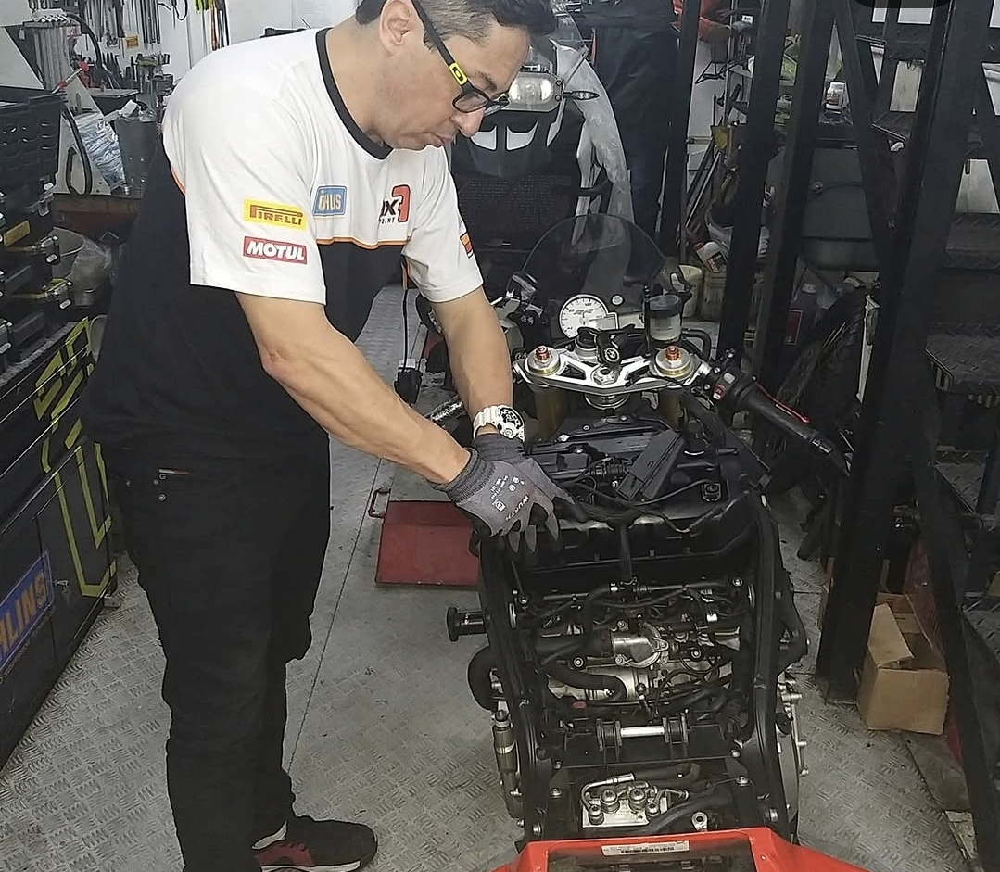
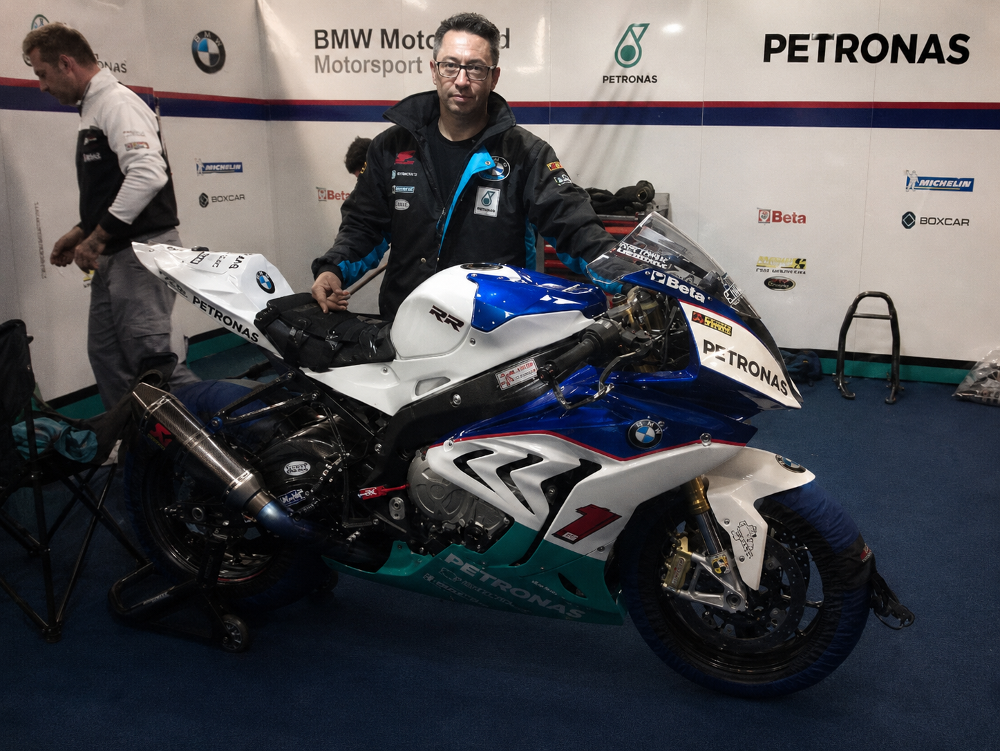
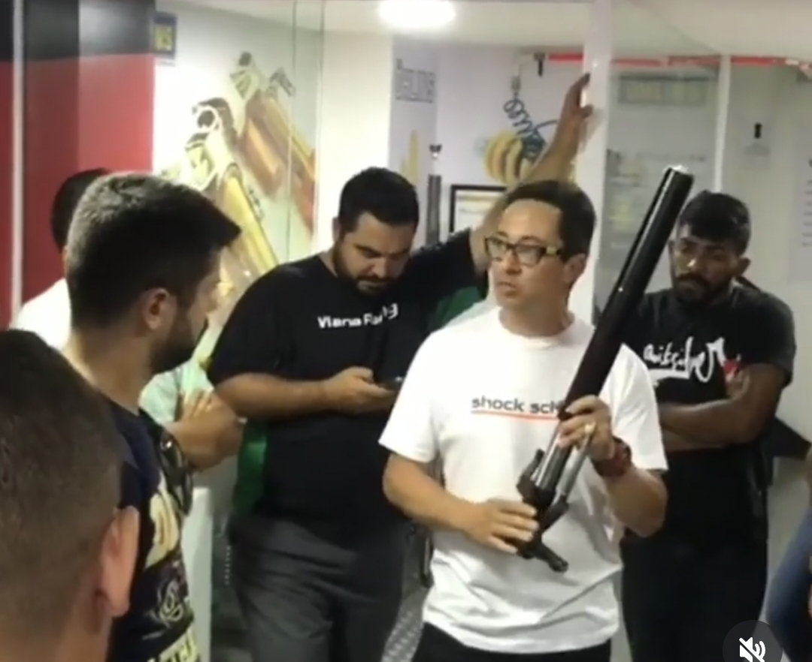
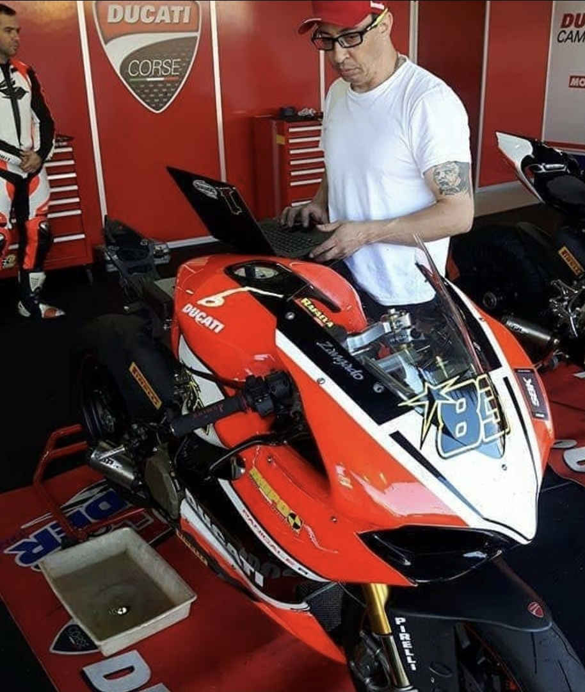
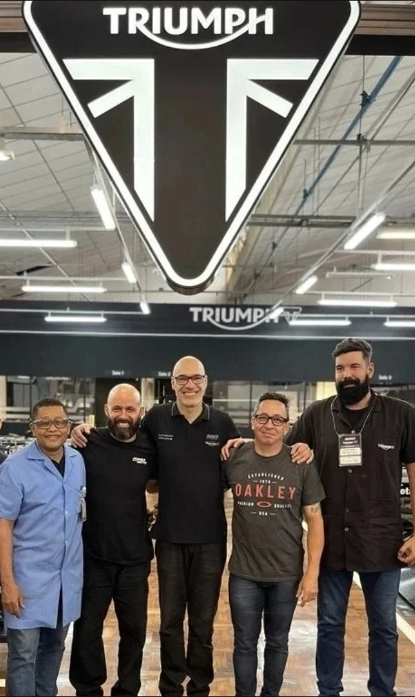
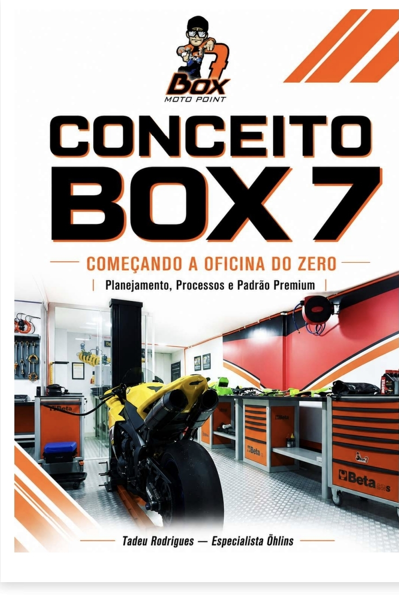
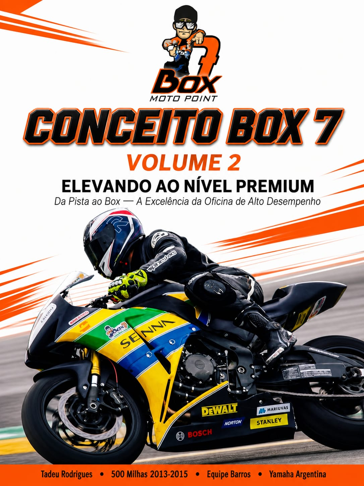
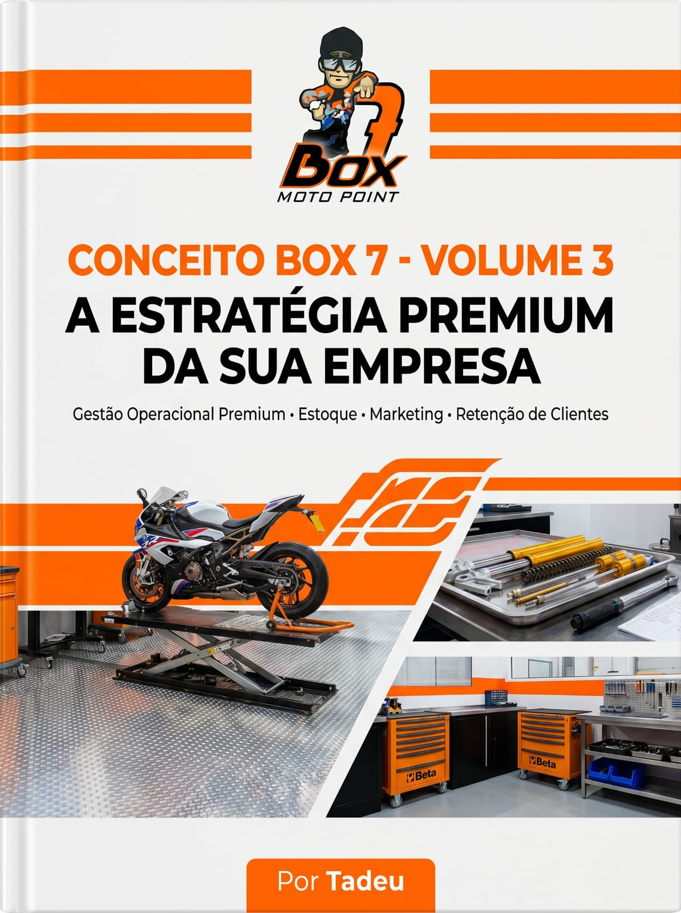
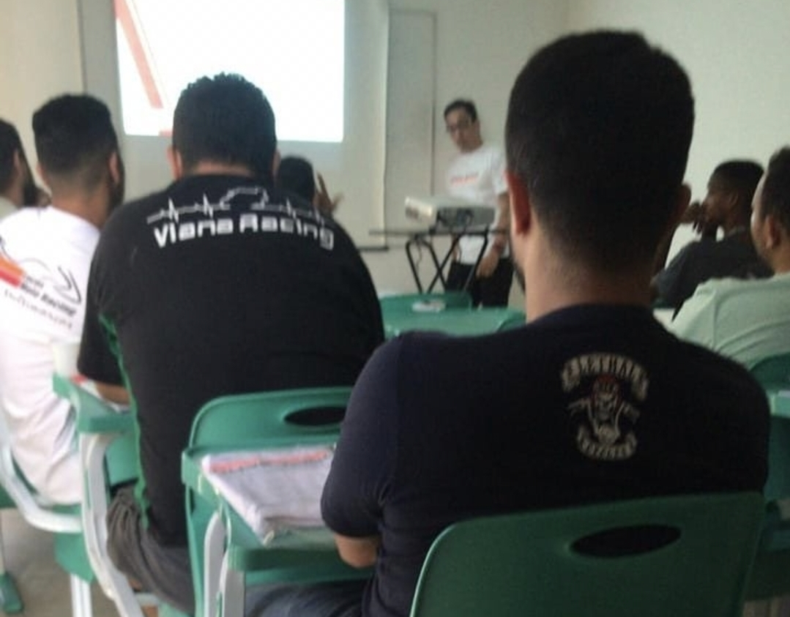

BOX7 Moto Point
Gestão Estratégica para Oficinas de Motocicletas
Gestão Estratégica para Oficinas de Motocicletas
Mais do que ensinar mecânica ensinamos gestão , o Método BOX7 reúne quase duas décadas de experiência em concessionárias premium, equipes de competição, treinamentos técnicos e gestão estratégica para ajudar empresários a construir oficinas mais organizadas, eficientes e lucrativas.

O primeiro passo para transformar sua oficina em uma empresa organizada, lucrativa e preparada para crescer. Em apenas 7 dias você aprenderá um método prático para organizar processos, aumentar a produtividade e eliminar desperdícios.

BOX7 Moto Point é um ecossistema completo de desenvolvimento para oficinas de motocicletas. Nosso objetivo é ensinar empresários, mecânicos e gestores a administrar uma oficina lucrativa, organizada e preparada para crescer.
Planejamento, indicadores, metas e processos.
Como atrair clientes todos os meses.
Fluxo de caixa, lucro e precificação.
Padronização e aumento da produtividade.
A BOX7 Moto Point nasceu da experiência prática de quem viveu oficinas, concessionárias, equipes de competição e gestão estratégica durante quase duas décadas.

Foram 18 anos dedicados ao universo das motocicletas. Muito antes de ensinar gestão, vivi cada desafio dentro das oficinas.
Especializei-me em suspensão, motores, injeção eletrônica, preparação de cabeçotes, ferramentas especiais, eletrônica embarcada e competição.
Atuei diretamente em equipes oficiais, concessionárias premium, projetos de implantação, treinamentos técnicos e desenvolvimento de processos para aumentar produtividade e lucratividade.
Cada etapa dessa jornada contribuiu para a criação do Método BOX7.

Atuação em motocicletas premium desenvolvendo conhecimento em diagnóstico eletrônico, processos, mecânica avançada, qualidade e atendimento técnico especializado.
Atuação em concessionárias Yamaha, preparação de motocicletas, diagnóstico eletrônico, motores, suspensão, injeção eletrônica, treinamento técnico e desenvolvimento de processos para aumento da produtividade.


Participação em uma das maiores provas de motovelocidade do Brasil, atuando diretamente na preparação das motocicletas, estratégia de corrida, resolução rápida de problemas e suporte técnico durante a competição.
Formação técnica voltada para preparação, regulagem e diagnóstico de sistemas de suspensão de alto desempenho utilizados em motocicletas esportivas e de competição.


Desenvolvimento de projetos estratégicos para oficinas de motocicletas, implantação de processos, gestão financeira, marketing, indicadores, treinamento de equipes e aumento da lucratividade.
Além da atuação em concessionárias premium, participei de treinamentos técnicos, equipes de competição e projetos de implantação que ampliaram minha visão sobre gestão, tecnologia e alta performance.

Treinamento especializado em suspensão, preparação e diagnóstico de motocicletas de alta performance.

Participação em equipe de competição, desenvolvimento técnico e preparação de motocicletas para alto rendimento.

Participação no projeto de implantação de concessionária, definição de processos e estrutura técnica da operação.
Durante quase duas décadas vivi o universo das motocicletas em oficinas, equipes de competição, concessionárias e projetos estratégicos. Hoje compartilho esse conhecimento através do Método BOX7.
Participação no Recall Oficial de aproximadamente 220 motocicletas BMW.
Mecânico em uma das maiores provas de motovelocidade do Brasil.
Participação em equipe de competição.
Atuação ao lado de pilotos profissionais e desenvolvimento técnico.
Especialização internacional em suspensão de alta performance.
Implantação de processos e gestão estratégica para oficinas e concessionárias.
Aprenda tudo o que uma oficina moderna precisa para crescer.

Aprenda como abrir e estruturar sua oficina do jeito certo, evitando erros, organizando processos e construindo uma base sólida para crescer.
Comprar Volume I
Descubra como transformar conhecimento técnico em gestão estratégica, aumentando resultados, produtividade e lucratividade.
Comprar Volume II
A obra completa reunindo todo o método BOX7 Moto Point para construir uma oficina moderna, organizada, lucrativa e preparada para crescer.
Comprar TrilogiaO BOX7 LAB™ reúne ferramentas inteligentes desenvolvidas para eliminar o achismo da gestão e ajudar oficinas a crescerem com indicadores, processos e decisões baseadas em dados.
Descubra em menos de 2 minutos quanto sua oficina deve cobrar por hora utilizando indicadores financeiros profissionais e elimine o achismo da precificação.
Disponível Conhecer Ferramenta →Descubra automaticamente o preço ideal de peças e serviços.
Abrir Ferramenta →Visualize faturamento, margem, ticket médio e indicadores em tempo real.
Em breve Quero ser avisado →Modelo profissional para atendimento, aprovação e entrega de motocicletas.
Em breve Quero ser avisado →Controle entradas, saídas e giro de estoque de forma inteligente.
Em breve Quero ser avisado →Acompanhe os principais indicadores estratégicos da sua oficina.
Em breve Quero ser avisado →Os alunos BOX7 terão acesso antecipado às próximas ferramentas do ecossistema.
Quero fazer parte →Implantamos processos, indicadores e planejamento estratégico para transformar oficinas em empresas altamente lucrativas.

Aprenda diretamente com especialistas do BOX7 Moto Point.

Receba orientação prática para implantar o método BOX7 na sua oficina.
Defina metas claras.
Controle seu lucro.
Treine colaboradores.
Cresça com segurança.
Mais de 18 anos investindo em conhecimento técnico, gestão, competição e tecnologia para entregar resultados reais.


Durante quase duas décadas identifiquei os erros que mais reduzem o lucro das oficinas. Preparei um checklist prático para você descobrir onde sua empresa está perdendo dinheiro e quais ações tomar imediatamente.
Ao longo de quase duas décadas, participei de treinamentos técnicos, projetos, equipes de competição e programas de capacitação que contribuíram para a construção do Método BOX7. Esta seção representa essa trajetória profissional e não constitui vínculo comercial ou patrocínio.
Especializações em sistemas de suspensão e preparação de motocicletas de alta performance.
Formações técnicas voltadas para eletrônica embarcada, injeção e diagnóstico.
Experiência prática em equipes de competição e preparação de motocicletas.
Atuação em processos, qualidade, gestão e atendimento técnico especializado.
Implantação de processos, indicadores, planejamento e aumento da lucratividade.
Atualização constante por meio de certificações nacionais e internacionais.
Empresários que decidiram profissionalizar suas oficinas.
"O BOX7 mudou completamente minha forma de administrar."
Marcelo Oliveira"Hoje tenho indicadores e lucro todos os meses."
Carlos Henrique"Minha oficina ficou organizada e muito mais produtiva."
Eduardo SouzaTire suas principais dúvidas sobre o Método BOX7 Moto Point.
Sim. Todo o método foi desenvolvido especificamente para oficinas de motocicletas, desde pequenos empreendedores até centros automotivos especializados.
Não. O conteúdo foi criado para ser simples, prático e aplicado no dia a dia da oficina.
Sim. Após a confirmação do pagamento, a Hotmart libera o acesso automaticamente.
Sim. Você terá a garantia oferecida pela Hotmart conforme a legislação vigente.
Chega de improvisar. Aprenda gestão profissional, aumente sua lucratividade e transforme sua oficina em uma empresa de alta performance.
© 2026 BOX7 Moto Point - Todos os direitos reservados.